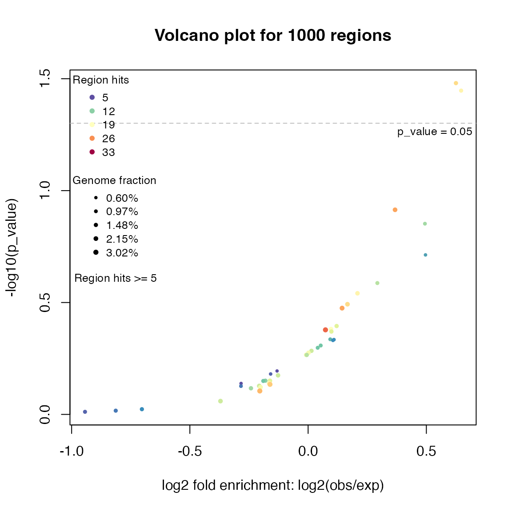
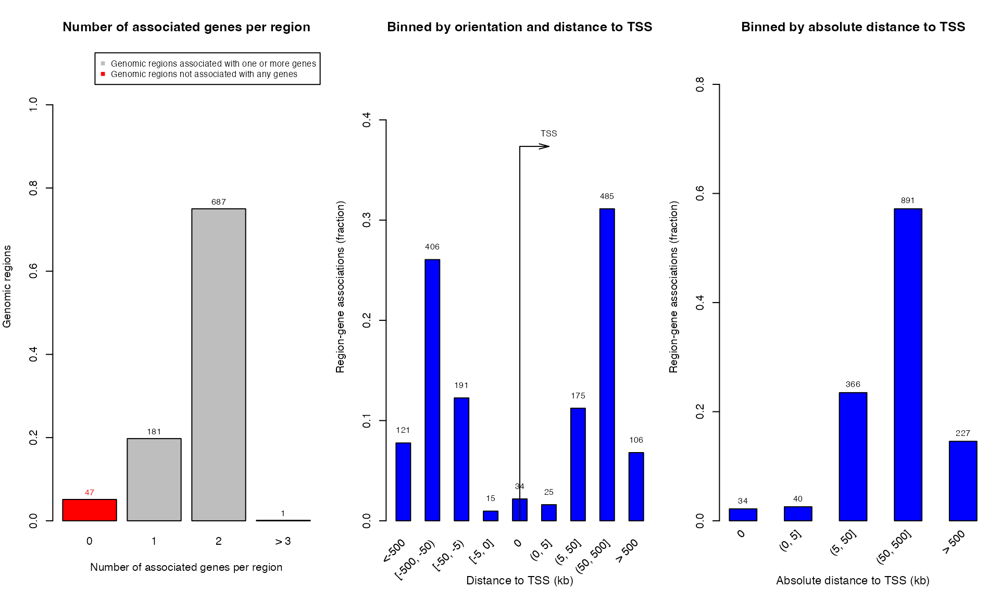
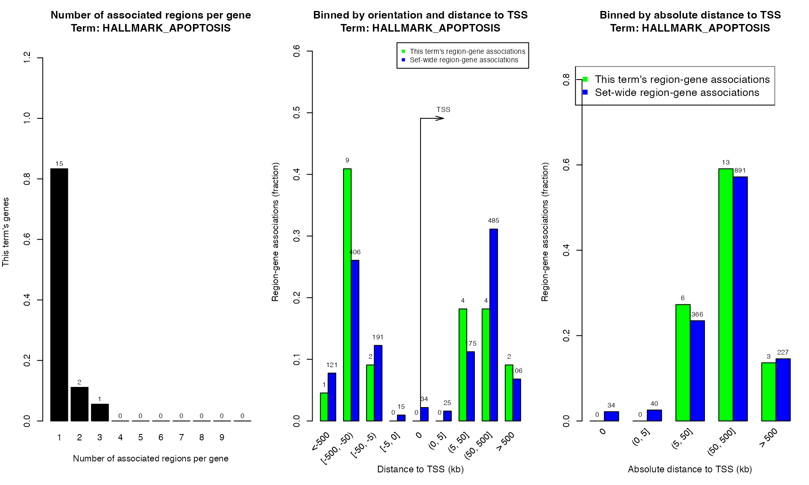

Topic 3-02: Local GREAT analysis
Zuguang Gu z.gu@dkfz.de
2025-05-31
Source:vignettes/topic3_03_local_GREAT.Rmd
topic3_03_local_GREAT.RmdBasic usage
First let’s load the rGREAT package and generate a set of random regions:
library(rGREAT)
set.seed(123)
gr = randomRegions(nr = 1000, genome = "hg19")Besides the input regions, GREAT analysis needs two types of input
data: the gene sets and TSS source. Thus the second argument in
great() corresponds to the gene sets, and the third
argument corresponds to the source of TSS.
rGREAT has integrated many gene sets and genomes.
The second argument (the gene set) supports:
- a name of a pre-defined gene set collection
- a list of genes
The third argument (the source of TSSs) supports
- genome version,
- a
GRanges()object with an additional meta columngene_id - other not for end users.
res = great(gr, "MSigDB:H", "hg19")Following functions are very similar as in online GREAT.
tb = getEnrichmentTable(res)
plotVolcano(res)

## GRanges object with 869 ranges and 2 metadata columns:
## seqnames ranges strand | annotated_genes dist_to_TSS
## <Rle> <IRanges> <Rle> | <CharacterList> <IntegerList>
## [1] chr1 9204434-9208784 * | GPR157,H6PD -15205,-86079
## [2] chr1 9853594-9859363 * | PIK3CD,CLSTN1 141804,25187
## [3] chr1 10862809-10871681 * | CASZ1,C1orf127 -6076,170413
## [4] chr1 12716970-12723206 * | AADACL4,AADACL3 12404,-52912
## [5] chr1 13814692-13823250 * | PRAMEF17,LRRC38 98604,16992
## ... ... ... ... . ... ...
## [865] chrY 16384799-16389852 * | TMSB4Y,NLGN4Y 569352,-244636
## [866] chrY 16842593-16846893 * | NLGN4Y 208105
## [867] chrY 16998750-17003225 * | NLGN4Y 364262
## [868] chrY 24401612-24406252 * | RBMY1E,RBMY1F -72523,-48754
## [869] chrY 26206997-26215445 * | DAZ2 841416
## -------
## seqinfo: 26 sequences from an unspecified genome; no seqlengths
plotRegionGeneAssociations(res, term_id = "HALLMARK_APOPTOSIS")
# shinyReport(res)The following gene sets are directly supported:
-
"GO:BP": Biological Process. -
"GO:CC": Cellular Component. -
"GO:MP": Molecular Function.
Note MSigDB genes are only for human.
-
"msigdb:H"Hallmark gene sets. -
"msigdb:C1"Positional gene sets. -
"msigdb:C2"Curated gene sets. -
"msigdb:C2:CGP"C2 subcategory: chemical and genetic perturbations gene sets. -
"msigdb:C2:CP"C2 subcategory: canonical pathways gene sets. -
"msigdb:C2:CP:KEGG"C2 subcategory: KEGG subset of CP. -
"msigdb:C2:CP:PID"C2 subcategory: PID subset of CP. -
"msigdb:C2:CP:REACTOME"C2 subcategory: REACTOME subset of CP. -
"msigdb:C2:CP:WIKIPATHWAYS"C2 subcategory: WIKIPATHWAYS subset of CP. -
"msigdb:C3"Regulatory target gene sets. -
"msigdb:C3:MIR:MIRDB"miRDB of microRNA targets gene sets. -
"msigdb:C3:MIR:MIR_LEGACY"MIR_Legacy of MIRDB. -
"msigdb:C3:TFT:GTRD"GTRD transcription factor targets gene sets. -
"msigdb:C3:TFT:TFT_LEGACY"TFT_Legacy. -
"msigdb:C4"Computational gene sets. -
"msigdb:C4:CGN"C4 subcategory: cancer gene neighborhoods gene sets. -
"msigdb:C4:CM"C4 subcategory: cancer modules gene sets. -
"msigdb:C5"Ontology gene sets. -
"msigdb:C5:GO:BP"C5 subcategory: BP subset. -
"msigdb:C5:GO:CC"C5 subcategory: CC subset. -
"msigdb:C5:GO:MF"C5 subcategory: MF subset. -
"msigdb:C5:HPO"C5 subcategory: human phenotype ontology gene sets. -
"msigdb:C6"Oncogenic signature gene sets. -
"msigdb:C7"Immunologic signature gene sets. -
"msigdb:C7:IMMUNESIGDB"ImmuneSigDB subset of C7. -
"msigdb:C7:VAX"C7 subcategory: vaccine response gene sets. -
"msigdb:C8"Cell type signature gene sets.
The "GO:" and “msigdb:” prefix can be removed when
specifying in great().
Setting genome background
Background can be set via backgroud and
excluce arguments.
gap = getGapFromUCSC("hg19", paste0("chr", c(1:22, "X", "Y")))
great(gr, "MSigDB:H", "hg19", exclude = gap)
great(gr, "GO:BP", "hg19", background = paste0("chr", 1:22))
great(gr, "GO:BP", "hg19", exclude = c("chrX", "chrY"))Restricting the anallysis in a certain type of genome background helps to reduce the false positives. Examples are:
- excluding unmappable regions
- regions with certain level of CG density
- regions with certain level of gene densities
- exons (coding regions)
A very useful case is to perform GREAT only in promoter regions or in distal regions from gene:
great(gr, ..., background = promoters)
great(gr, ..., background = distal)
great(gr, ..., background = gene_body)Question: how to obtain intergenic and distal regions from TSS?
Extend from the complete gene
By default genes are extended only from TSS. In the newer version of rGREAT (>= 2.10.0), you can also extend from the complete gene bodies.
great(gr, "BP", "hg19", extend_from = "gene")Using other gene sets
great() supports self-defined gene sets. Just make sure
genes in gene models have the same ID type as in gene sets.
More gene sets can be set as a list of gene vectors. For most organisms, EntreZ IDs should be used as the gene ID type in gene sets.
From a .gmt file:
gs = read_gmt(url("http://dsigdb.tanlab.org/Downloads/D2_LINCS.gmt"),
from = "SYMBOL", to = "ENTREZ", orgdb = "org.Hs.eg.db")
gs[1:2]## $GSK429286A
## [1] "5566" "9475" "81788" "6093" "5562" "26524" "5592" "5979" "640"
## [10] "5567" "3717" "5613" "23012" "695" "3718"
##
## $`BS-181`
## [1] "122011" "1452" "1022" "7272" "1454" "1453" "65975" "147746"
## [9] "1859" "1195" "1196" "9149" "57396" "5261"
great(gr, gs, "hg19")## 916 regions are associated to 1400 genes' extended TSSs.
## TSS source: TxDb.Hsapiens.UCSC.hg19.knownGene
## Genome: hg19
## OrgDb: org.Hs.eg.db
## Gene sets: self-provided
## Background: whole genome excluding gaps
## Mode: Basal plus extension
## Proximal: 5000 bp upstream, 1000 bp downstream,
## plus Distal: up to 1000000 bpKEGG pathways:
df = read.table(url("https://rest.kegg.jp/link/pathway/hsa"), sep = "\t")
df[, 1] = gsub("hsa:", "", df[, 1])
df[, 2] = gsub("path:", "", df[, 2])
gs_kegg = split(df[, 1], df[, 2])
gs_kegg[1:2]## $hsa00010
## [1] "10327" "124" "125" "126" "127" "128" "130" "130589"
## [9] "131" "160287" "1737" "1738" "2023" "2026" "2027" "217"
## [17] "218" "219" "2203" "221" "222" "223" "224" "226"
## [25] "229" "230" "2538" "2597" "26330" "2645" "2821" "3098"
## [33] "3099" "3101" "387712" "3939" "3945" "3948" "441531" "501"
## [41] "5105" "5106" "5160" "5161" "5162" "5211" "5213" "5214"
## [49] "5223" "5224" "5230" "5232" "5236" "5313" "5315" "55276"
## [57] "55902" "57818" "669" "7167" "80201" "83440" "84532" "8789"
## [65] "92483" "92579" "9562"
##
## $hsa00020
## [1] "1431" "1737" "1738" "1743" "2271" "3417" "3418" "3419" "3420"
## [10] "3421" "4190" "4191" "47" "48" "4967" "50" "5091" "5105"
## [19] "5106" "5160" "5161" "5162" "55753" "6389" "6390" "6391" "6392"
## [28] "8801" "8802" "8803"
great(gr, gs_kegg, "hg19")## 916 regions are associated to 1400 genes' extended TSSs.
## TSS source: TxDb.Hsapiens.UCSC.hg19.knownGene
## Genome: hg19
## OrgDb: org.Hs.eg.db
## Gene sets: self-provided
## Background: whole genome excluding gaps
## Mode: Basal plus extension
## Proximal: 5000 bp upstream, 1000 bp downstream,
## plus Distal: up to 1000000 bpOther organisms which have TxDb packages
On Bioconductor, there are a family of annotation packages with name TxDb.*.db. These packages contain sources of TSS definitions.
All supported txdb.*.db packages:
tb = rGREAT:::BIOC_ANNO_PKGS
knitr::kable(tb[!duplicated(tb$genome_version_in_txdb), ])| species_name | species_latin | taxon_id | txdb | gene_id_in_txdb | genome_version_in_txdb | orgdb | primary_gene_id_in_orgdb | chromosome_prefix | |
|---|---|---|---|---|---|---|---|---|---|
| 1 | human | Homo sapiens | 9606 | TxDb.Hsapiens.UCSC.hg18.knownGene | Entrez Gene ID | hg18 | org.Hs.eg.db | Entrez Gene ID | chr |
| 2 | human | Homo sapiens | 9606 | TxDb.Hsapiens.UCSC.hg19.knownGene | Entrez Gene ID | hg19 | org.Hs.eg.db | Entrez Gene ID | chr |
| 3 | human | Homo sapiens | 9606 | TxDb.Hsapiens.UCSC.hg38.knownGene | Entrez Gene ID | hg38 | org.Hs.eg.db | Entrez Gene ID | chr |
| 5 | mouse | Mus musculus | 10090 | TxDb.Mmusculus.UCSC.mm10.knownGene | Entrez Gene ID | mm10 | org.Mm.eg.db | Entrez Gene ID | chr |
| 7 | mouse | Mus musculus | 10090 | TxDb.Mmusculus.UCSC.mm39.refGene | Entrez Gene ID | mm39 | org.Mm.eg.db | Entrez Gene ID | chr |
| 8 | mouse | Mus musculus | 10090 | TxDb.Mmusculus.UCSC.mm9.knownGene | Entrez Gene ID | mm9 | org.Mm.eg.db | Entrez Gene ID | chr |
| 9 | rat | Rattus norvegicus | 10116 | TxDb.Rnorvegicus.UCSC.rn4.ensGene | Ensembl gene ID | rn4 | org.Rn.eg.db | Entrez Gene ID | chr |
| 10 | rat | Rattus norvegicus | 10116 | TxDb.Rnorvegicus.UCSC.rn5.refGene | Entrez Gene ID | rn5 | org.Rn.eg.db | Entrez Gene ID | chr |
| 11 | rat | Rattus norvegicus | 10116 | TxDb.Rnorvegicus.UCSC.rn6.refGene | Entrez Gene ID | rn6 | org.Rn.eg.db | Entrez Gene ID | chr |
| 12 | rat | Rattus norvegicus | 10116 | TxDb.Rnorvegicus.UCSC.rn7.refGene | Entrez Gene ID | rn7 | org.Rn.eg.db | Entrez Gene ID | chr |
| 13 | chicken | Gallus gallus | 9031 | TxDb.Ggallus.UCSC.galGal4.refGene | Entrez Gene ID | galGal4 | org.Gg.eg.db | Entrez Gene ID | chr |
| 14 | chicken | Gallus gallus | 9031 | TxDb.Ggallus.UCSC.galGal5.refGene | Entrez Gene ID | galGal5 | org.Gg.eg.db | Entrez Gene ID | chr |
| 15 | chicken | Gallus gallus | 9031 | TxDb.Ggallus.UCSC.galGal6.refGene | Entrez Gene ID | galGal6 | org.Gg.eg.db | Entrez Gene ID | chr |
| 16 | rhesus | Macaca mulatta | 9544 | TxDb.Mmulatta.UCSC.rheMac10.refGene | Entrez Gene ID | rheMac10 | org.Mmu.eg.db | Entrez Gene ID | chr |
| 17 | rhesus | Macaca mulatta | 9544 | TxDb.Mmulatta.UCSC.rheMac3.refGene | Entrez Gene ID | rheMac3 | org.Mmu.eg.db | Entrez Gene ID | chr |
| 18 | rhesus | Macaca mulatta | 9544 | TxDb.Mmulatta.UCSC.rheMac8.refGene | Entrez Gene ID | rheMac8 | org.Mmu.eg.db | Entrez Gene ID | chr |
| 19 | worm | Caenorhabditis elegans | 6239 | TxDb.Celegans.UCSC.ce11.refGene | Entrez Gene ID | ce11 | org.Ce.eg.db | Entrez Gene ID | chr |
| 21 | dog | Canis familiari | 9615 | TxDb.Cfamiliaris.UCSC.canFam3.refGene | Entrez Gene ID | canFam3 | org.Cf.eg.db | Entrez Gene ID | chr |
| 22 | dog | Canis familiari | 9615 | TxDb.Cfamiliaris.UCSC.canFam4.refGene | Entrez Gene ID | canFam4 | org.Cf.eg.db | Entrez Gene ID | chr |
| 23 | dog | Canis familiari | 9615 | TxDb.Cfamiliaris.UCSC.canFam5.refGene | Entrez Gene ID | canFam5 | org.Cf.eg.db | Entrez Gene ID | chr |
| 24 | pig | Sus scrofa | 9823 | TxDb.Sscrofa.UCSC.susScr11.refGene | Entrez Gene ID | susScr11 | org.Ss.eg.db | Entrez Gene ID | chr |
| 25 | pig | Sus scrofa | 9823 | TxDb.Sscrofa.UCSC.susScr3.refGene | Entrez Gene ID | susScr3 | org.Ss.eg.db | Entrez Gene ID | chr |
| 26 | yeast | Saccharomyces cerevisiae | 4932 | TxDb.Scerevisiae.UCSC.sacCer2.sgdGene | SGD Gene ID | sacCer2 | org.Sc.sgd.db | SGD Gene ID | chr |
| 27 | yeast | Saccharomyces cerevisiae | 4932 | TxDb.Scerevisiae.UCSC.sacCer3.sgdGene | SGD Gene ID | sacCer3 | org.Sc.sgd.db | SGD Gene ID | chr |
| 28 | chimp | Pan troglodytes | 9598 | TxDb.Ptroglodytes.UCSC.panTro4.refGene | Entrez Gene ID | panTro4 | org.Pt.eg.db | Entrez Gene ID | chr |
| 29 | chimp | Pan troglodytes | 9598 | TxDb.Ptroglodytes.UCSC.panTro5.refGene | Entrez Gene ID | panTro5 | org.Pt.eg.db | Entrez Gene ID | chr |
| 30 | chimp | Pan troglodytes | 9598 | TxDb.Ptroglodytes.UCSC.panTro6.refGene | Entrez Gene ID | panTro6 | org.Pt.eg.db | Entrez Gene ID | chr |
| 31 | fruitfly | Drosophila melanogaster | 7227 | TxDb.Dmelanogaster.UCSC.dm3.ensGene | Ensembl gene ID | dm3 | org.Dm.eg.db | Entrez Gene ID | chr |
| 32 | fruitfly | Drosophila melanogaster | 7227 | TxDb.Dmelanogaster.UCSC.dm6.ensGene | Ensembl gene ID | dm6 | org.Dm.eg.db | Entrez Gene ID | chr |
| 33 | zebrafish | Danio rerio | 7955 | TxDb.Drerio.UCSC.danRer10.refGene | Entrez Gene ID | danRer10 | org.Dr.eg.db | Entrez Gene ID | chr |
| 34 | zebrafish | Danio rerio | 7955 | TxDb.Drerio.UCSC.danRer11.refGene | Entrez Gene ID | danRer11 | org.Dr.eg.db | Entrez Gene ID | chr |
| 35 | cattle | Bos taurus | 9913 | TxDb.Btaurus.UCSC.bosTau8.refGene | Entrez Gene ID | bosTau8 | org.Bt.eg.db | Entrez Gene ID | chr |
| 36 | cattle | Bos taurus | 9913 | TxDb.Btaurus.UCSC.bosTau9.refGene | Entrez Gene ID | bosTau9 | org.Bt.eg.db | Entrez Gene ID | chr |
| 37 | thale cress | Arabidopsis thaliana | 3702 | TxDb.Athaliana.BioMart.plantsmart51 | TAIR ID | araTha | org.At.tair.db | TAIR ID |
For these packages, users only need to specify the “genome version”:
Note gr should have chr prefix for most of
the organisms.
Use MSigDB gene sets for other organisms
Taking chimpanzee as an example. There is an TxDb on Bioconductor.
gr = randomRegions(nr = 1000, genome = "panTro6")
library(GSEAtopics)
gs = get_msigdb(version = "2024.1.Hs", collection = "h.all")
gs2 = gs_map_to_orthologues(gs, from = "Homo.sapiens", to = "Pan.troglodytes")
great(gr, gs2, "panTro6")## 988 regions are associated to 662 genes' extended TSSs.
## TSS source: TxDb.Ptroglodytes.UCSC.panTro6.refGene
## Genome: panTro6
## OrgDb: org.Pt.eg.db
## Gene sets: self-provided
## Background: whole genome excluding gaps
## Mode: Basal plus extension
## Proximal: 5000 bp upstream, 1000 bp downstream,
## plus Distal: up to 1000000 bpOther organisms who have TxDb object on AnnotationHub
For some other organisms, although they don’t have a
TxDb package on Bioconductor, but they have a
TxDb object on AnnotationHub:
library(AnnotationHub)
ah = AnnotationHub()
query(ah, "TxDb")## AnnotationHub with 511 records
## # snapshotDate(): 2024-10-28
## # $dataprovider: UCSC, FungiDB, TriTrypDB, PlasmoDB, MicrosporidiaDB, ToxoDB...
## # $species: Homo sapiens, Rattus norvegicus, Macaca mulatta, Gallus gallus, ...
## # $rdataclass: TxDb, SQLiteFile, FaFile, ChainFile
## # additional mcols(): taxonomyid, genome, description,
## # coordinate_1_based, maintainer, rdatadateadded, preparerclass, tags,
## # rdatapath, sourceurl, sourcetype
## # retrieve records with, e.g., 'object[["AH52245"]]'
##
## title
## AH52245 | TxDb.Athaliana.BioMart.plantsmart22.sqlite
## AH52246 | TxDb.Athaliana.BioMart.plantsmart25.sqlite
## AH52247 | TxDb.Athaliana.BioMart.plantsmart28.sqlite
## AH52248 | TxDb.Btaurus.UCSC.bosTau8.refGene.sqlite
## AH52249 | TxDb.Celegans.UCSC.ce11.refGene.sqlite
## ... ...
## AH114096 | TxDb.Mmusculus.UCSC.mm39.refGene.sqlite
## AH116719 | TxDb.Hsapiens.UCSC.hg38.refGene.sqlite
## AH116720 | TxDb.Mmusculus.UCSC.mm39.refGene.sqlite
## AH117076 | TxDb.Hsapiens.UCSC.hg38.knownGene.sqlite
## AH117077 | TxDb.Mmusculus.UCSC.mm39.knownGene.sqliteBut it seems many of those organisms are microbes. I will not introduce it here.
Other organisms who do not have TxDb objects
Get TSS from NCBI
We need to first know the “accession number” of an organism’s genome.
Taking dolphin as an example, its web page on NCBI Genome is https://www.ncbi.nlm.nih.gov/datasets/genome/GCF_011762595.1/.
In rGREAT, there is a
getGenomeDataFromNCBI() function which can automatically
retrieve gene definitions from NCBI.
genes = getGenomeDataFromNCBI("GCF_011762595.1", return_granges = TRUE)
genes## GRanges object with 19081 ranges and 1 metadata column:
## seqnames ranges strand | gene_id
## <Rle> <IRanges> <Rle> | <character>
## [1] 1 234018-239154 + | 101335869
## [2] 1 241768-255021 + | 101336161
## [3] 1 259970-287776 + | 101336448
## [4] 1 288745-298452 + | 101336738
## [5] 1 325391-327082 - | 101321052
## ... ... ... ... . ...
## [19077] MT 9921-10217 + | 7412053
## [19078] MT 10211-11588 + | 7412054
## [19079] MT 11790-13610 + | 7412055
## [19080] MT 13594-14121 - | 7412056
## [19081] MT 14195-15334 + | 7412057
## -------
## seqinfo: 23 sequences from an unspecified genomeWith it, the chromosome lengths are also retrieved:
seqlengths(genes)## 1 2 3 4 5 6 7 8
## 183742880 176472748 171421769 144183200 137487549 115599616 114015307 108430135
## 9 10 11 12 13 14 15 16
## 105335178 102812509 102167733 89330967 88485069 88483154 86293990 83508544
## 17 18 19 20 21 X MT
## 78442772 78151963 58636127 58467291 35682248 128693445 16388As we have already introduced, retrieve GO gene sets for an organism is easy:
library(AnnotationHub)
ah = AnnotationHub()
hit = query(ah, c("Tursiops truncatus", "OrgDb"))
orgdb = ah[[ hit$ah_id ]]
library(GSEAtopics)
gs = get_GO_gene_sets_from_orgdb(orgdb, "BP")
gs[1:2]## $`GO:0000002`
## [1] "101315666" "101325920" "101326047" "101328885" "101329040" "101329473"
## [7] "101330306" "101330328" "101332655" "101336906"
##
## $`GO:0000012`
## [1] "101321216" "101324135" "101337120"Note genes is set to the argument
tss_source:
gr = randomRegions(nr = 1000, seqlengths = seqlengths(genes))
great(gr, gs, genes)## 1000 regions are associated to 1614 genes' extended TSSs.
## TSS source: self-provided
## Genome: unknown
## Gene sets: self-provided
## Background: whole genome
## Mode: Basal plus extension
## Proximal: 5000 bp upstream, 1000 bp downstream,
## plus Distal: up to 1000000 bpRemember to double check the format of chromosome names in
gr and in genes.
Practice
Practice 1
Run local GREAT analysis with a list of TFBS from UCSC table browser:
clade: Mammal
genome: Human
assembly: GRCh37/hg19
group: Regulation
track: ENCODE 3 TFBS
table: 22Rv1 ZFX (encTfChipRkENCFF445OFX)In the “output format” field, select “BED - browser extensible data”, then click the button “get output”. In the next page, click the button “get BED”.
Use 1. the GO BP gene sets and 2. KEGG pathways.